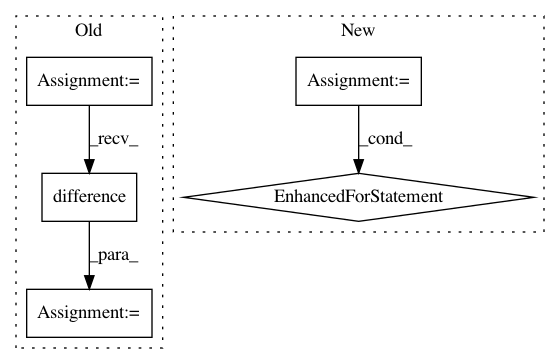

9def69a805132ff7549744b5b30a2fa7531fa405,tmtoolkit/preprocess/_tmpreproc.py,TMPreproc,load_tokens_dataframe,#TMPreproc#Any#,263
Before Change
// convert big dataframe to dict of document token dicts to be used in load_tokens
tokens = {}
for dl, doc_df in tokendf.groupby(level=0):
doc_df = doc_df.reset_index()
doc_df = doc_df.loc[:, doc_df.columns.difference(ind_names)]
tokens[dl] = doc_df
return self.load_tokens(tokens)
After Change
// convert big dataframe to dict of document token dicts to be used in load_tokens
tokens = {}
for dl in dt.unique(tokendf[:, dt.f.doc]).to_list()[0]:
doc_df = tokendf[dt.f.doc == dl, :]
colnames = list(doc_df.names)
colnames.pop(colnames.index("doc"))
tokens[dl] = doc_df[:, colnames]
return self.load_tokens(tokens)
def __copy__(self):
In pattern: SUPERPATTERN
Frequency: 3
Non-data size: 5
Instances
Project Name: WZBSocialScienceCenter/tmtoolkit
Commit Name: 9def69a805132ff7549744b5b30a2fa7531fa405
Time: 2019-06-12
Author: markus.konrad@wzb.eu
File Name: tmtoolkit/preprocess/_tmpreproc.py
Class Name: TMPreproc
Method Name: load_tokens_dataframe
Project Name: dit/dit
Commit Name: 3181b06a66ee5a2185f637e4072cc8e24d0801ec
Time: 2015-03-05
Author: chebee7i@gmail.com
File Name: dit/validate.py
Class Name:
Method Name: validate_outcomes
Project Name: ericmjl/pyjanitor
Commit Name: b5dca485575de7052f2ce8f39ea845e848e1ac89
Time: 2020-12-09
Author: samueloranyeli@gmail.com
File Name: janitor/functions.py
Class Name:
Method Name: fill_direction